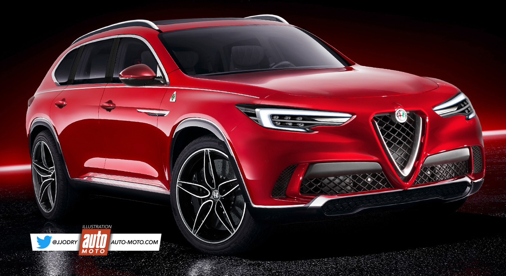

About us

Alfa Romeo
En attendant une pluie de nouveautés en 2020, cette année devrait être plutôt calme pour le Trèfle, avec le lancement de l’Alfa Roméo Castello, un grand SUV 7 places, proche des 5 mètres de long, capable de rivaliser avec le Mercedes GLE.
En attendant une pluie de nouveautés en 2020, cette année devrait être plutôt calme pour le Trèfle, avec le lancement de l’Alfa Roméo Castello, un grand SUV 7 places, proche des 5 mètres de long, capable de rivaliser avec le Mercedes GLE.
 Audi
Programme chargé, en apparences, pour les Anneaux, qui se focaliseront surtout sur la déclinaison de modèles existants. Hormis l’Audi A3, présentée en mars à Genève, aucun nouveau modèle à part entière n’est espéré. Une Audi S1, d’environ 250 ch, développera la récente gamme A1, en fin d’année. Une évolution hautes performances que connaîtra aussi la gamme Q2 avec un Audi SQ2 lancé au premier semestre. En Chine, le SUV urbain s’attachera les services d’un bloc e-tron 100 % électrique, dont nous pourrions bénéficier en Europe. Le nouvel Audi Q3 passera sous label RS au printemps, avec aux alentours de 400 ch, au moment où une nouvelle silhouette, basée sur ce même modèle, intégrera la gamme : un SUV coupé répondant au nom d’Audi Q4. les berlines A6 et A7 Sportback se déclineront aussi en sportives, tout au long de l’année. Plus sage, l’Audi A4 recevra rapidement un véritable facelift, après une mise à jour bien timide l’été dernier. Même topo concernant l’Audi Q7, qui s’inspirera du look du Q8, pour se moderniser. L’Audi R8, récemment dévoilée, muscle son jeu en coupé et cabriolet, à mi-carrière. Enfin, le SUV électrique e-tron, tout juste arrivé au catalogue, profitera d’une silhouette Sportback avant de faire le grand saut en 2020.
Audi
Programme chargé, en apparences, pour les Anneaux, qui se focaliseront surtout sur la déclinaison de modèles existants. Hormis l’Audi A3, présentée en mars à Genève, aucun nouveau modèle à part entière n’est espéré. Une Audi S1, d’environ 250 ch, développera la récente gamme A1, en fin d’année. Une évolution hautes performances que connaîtra aussi la gamme Q2 avec un Audi SQ2 lancé au premier semestre. En Chine, le SUV urbain s’attachera les services d’un bloc e-tron 100 % électrique, dont nous pourrions bénéficier en Europe. Le nouvel Audi Q3 passera sous label RS au printemps, avec aux alentours de 400 ch, au moment où une nouvelle silhouette, basée sur ce même modèle, intégrera la gamme : un SUV coupé répondant au nom d’Audi Q4. les berlines A6 et A7 Sportback se déclineront aussi en sportives, tout au long de l’année. Plus sage, l’Audi A4 recevra rapidement un véritable facelift, après une mise à jour bien timide l’été dernier. Même topo concernant l’Audi Q7, qui s’inspirera du look du Q8, pour se moderniser. L’Audi R8, récemment dévoilée, muscle son jeu en coupé et cabriolet, à mi-carrière. Enfin, le SUV électrique e-tron, tout juste arrivé au catalogue, profitera d’une silhouette Sportback avant de faire le grand saut en 2020.